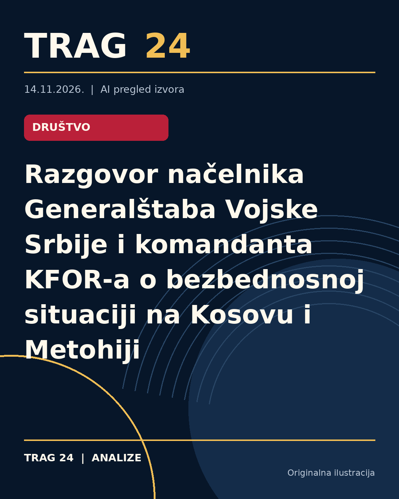

Razgovor načelnika Generalštaba Vojske Srbije i komandanta KFOR-a o bezbednosnoj situaciji na Kosovu i Metohiji

ŠTA SE DOGODILO
Načelnik Generalštaba Vojske Srbije, general Milan Mojsilović, razgovarao je sa komandantom KFOR-a, general-majorom Robertom Vergorijem, o bezbednosnoj situaciji na Kosovu i Metohiji. Sastanak je održan u Beogradu, a tema razgovora bile su mere za praćenje situacije na terenu, sprečavanje eskalacije krize i očuvanje mira i bezbednosti u južnoj pokrajini.
HRONOLOGIJA
Sastanak između dva zvaničnika održan je u trenutku kada je bezbednosna situacija na Kosovu i Metohiji ocenjena kao izuzetno osetljiva. Nije navedeno tačno vreme ili drugi detalji o događajima koji su prethodili ovom sastanku, niti je dat nastavak razgovora ili plan budućih susreta.
ŠTA NAVODE IZVORI
Sva tri izvora – Insajder, Telegraf i Danas – prenose da je tokom sastanka istaknuta važnost spremnosti međunarodnih bezbednosnih snaga, u skladu sa njihovim mandatima, da očuvaju bezbedno okruženje za sve na Kosovu i Metohiji. Takođe, naglašena je potreba za redovnom i otvorenom komunikacijom između Vojske Srbije i KFOR-a na svim nivoima. Izvori su saglasni u prikazu sadržaja sastanka i nisu izneli različite ili kontradiktorne podatke.
ŠTA JE POTVRĐENO
Potvrđeno je da je razgovor između načelnika Generalštaba Vojske Srbije i komandanta KFOR-a održan u Beogradu. Takođe, potvrđeno je da je bezbednosna situacija na Kosovu i Metohiji ocenjena kao izuzetno osetljiva i da su dogovorene aktivnosti usmerene ka praćenju situacije, sprečavanju eskalacije i očuvanju mira i bezbednosti. Istaknuta je važnost saradnje i komunikacije između dve strane.
ŠTA NIJE POTVRĐENO
Nisu potvrđeni detalji o konkretnim aktivnostima ili merama koje će biti preduzete nakon sastanka, kao ni moguće buduće dogovore ili konkretne politike. Nema informacija o tome da li su razgovori rezultirali nekim konkretnim odlukama ili promenama u pristupu bezbednosnim pitanjima na terenu.
ŠTA OSTАJE OTVORENO: Ostaje nejasno kako će se u praksi realizovati istaknute preporuke o saradnji i komunikaciji, te da li će situacija na terenu doći do značajnijih promena. Takođe, nije poznato da li će uslediti dalje konsultacije između Vojske Srbije i KFOR-a ili drugih relevantnih međunarodnih aktera. Očekuje se da će se bezbednosni razvoj događaja na Kosovu i Metohiji pratiti i u budućnosti.
Izvori
- https://insajder.net/prenosimo/nacelnik-generalstaba-vojske-srbije-i-komandant-kfora-razgovarali-o-bezbednosti-na-kosovu-i-metohiji
- https://www.telegraf.rs/vesti/srbija/4433027-mojsilovic-sa-komandantom-kfora-o-stanju-bezbednosti-na-kosovu-i-metohiji
- https://www.danas.rs/vesti/politika/mojsilovic-i-komandant-kfor-bezbednosna-situacija-na-kosovu-i-metohiji-izuzetno-osetljiva/
Ova analiza je pripremljena uz pomoć veštačke inteligencije na osnovu javno dostupnih izvora. Navodi izvora nisu nužno nezavisno potvrđeni.